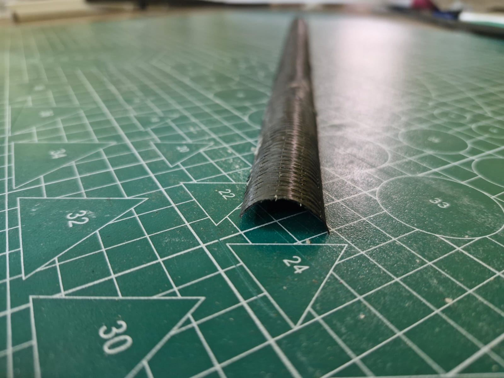
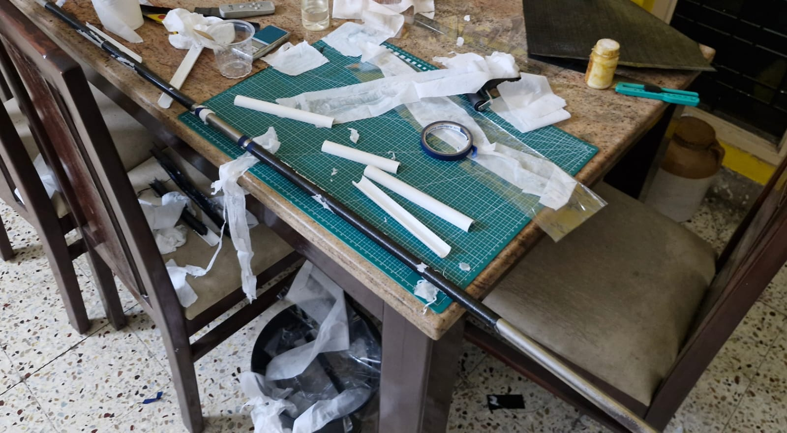

Design and Manual Fabrication of a Bistable Carbon Fiber Composite Boom
Documenting the hands-on development of a structure capable of holding two stable configurations.
This project documents the hands-on development of a bistable composite boom a structure capable of holding two stable configurations without external force using BhorForce® UC160C (160 gsm UD carbon fiber) and LY556 epoxy resin. Achieving bistability involved numerous iterations, with careful adjustment of layup strategy and curing consistency to tune the internal strain and geometry of the composite.
Material System
- Carbon Fiber: BhorForce® UC160C, 160 g/m² UD weave
- Resin System: LY556 epoxy with recommended hardener (e.g., HY951)
Design Objective
To design a deployable boom with two mechanically stable positions one stowed and one deployed using material anisotropy and laminate architecture to create stored elastic strain energy and snap-through behavior.
Fabrication Steps
- Mandrel Preparation: Smooth cylindrical mandrel treated with release agent
- Layup Strategy: Manual wrapping of UD carbon fiber in layers designed to induce bistability
- Resin Application: Brushed-on LY556 resin ensuring even saturation
- Manual Compaction: Layer pressing without vacuum tools, focusing on minimizing voids
- Curing: Ambient air curing over several hours, followed by trimming and observation
- Iteration Process: Several failed attempts were analyzed and refined until bistability was achieved
Outcome & Observations
The final boom successfully holds both a coiled (stowed) and extended (deployed) shape without requiring hinges or actuation. This result demonstrates a deep understanding of composite behavior and structural bistability, a hallmark of modern aerospace structures.
Challenges Overcome
- Maintaining fiber alignment without slippage
- Controlling layup curvature to induce bistability
- Repeated failure analysis and incremental design improvement
Image Gallery

Cutting and laying up the first carbon fiber ply

Aligning fibers and resin saturation on mandrel

Tools and materials ready for layup

Wrapping and curing on mandrel

Final cured boom before trimming
If you have a knack for curiosity and a dash of patience, you might just uncover the secrets of the layup pattern. Why not give it a shot? You might end up with your very own bistable boom masterpiece!
Required Force for Tip Deflection
Enter your boom dimensions and desired tip deflection. This calculator will compute the force needed to bend the boom that much.
Snap-Through Moment Calculator (Curved Bistable Boom)
Estimate the snap-through moment for a bistable composite boom using bending mode and thin-shell theory.
Effective Modulus Calculator (Rule of Mixtures)
Estimate the effective modulus E for a unidirectional composite lamina using fiber and matrix properties.
Composite Boom Stiffness Calculator
Enter your boom dimensions and select a layup type: